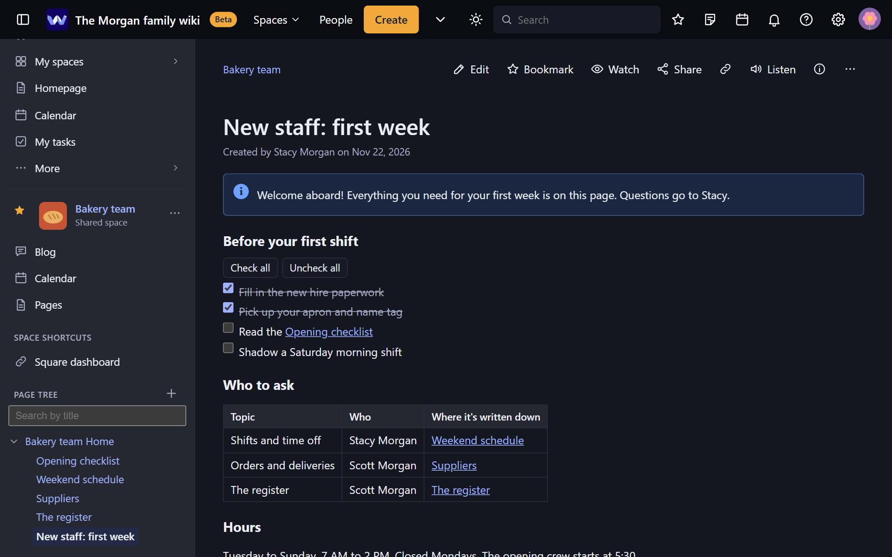

Spaces and a page tree
A shared space for each topic, such as Household, Recipes or a project, plus a personal space for everyone. Each has a home page, a page tree, its own shortcuts and a picture. Start one blank, or as documentation, a knowledge base or a team space, and keep it to yourself until you're ready to share it.
Edit what you see
A visual editor like the one you know from work: headings, text color, lists, tables with merged and colored cells, code blocks, quotes, and info, note, warning and tip panels. Add dates, status labels, emoji and anchors, with the same typing shortcuts and find and replace. No markup to learn, though you can paste Markdown.
Page layouts
Put text in two or three columns, with or without a sidebar, and as many sections of columns as a page needs, with ordinary text between them. On a phone the columns stack.
Drafts you don't lose
What you type is kept as a draft and comes back if you close the tab. Preview it or compare it with the published page, then save it with a short note on what you changed, or without telling watchers about a small fix.
Pages that stay up to date
Insert a table of contents, the pages under this one, the space's page tree, its recent updates and contributors, the pages with a label, or another page's text. Each is worked out whenever the page is shown, from what the reader may see.
Templates
Start a page from a template: Meeting notes, Decision, How-to, Troubleshooting and Retrospective come built in, and admins keep their own for one space or every space. A {date} in the title fills in the day.
Checklists
Packing lists, chores, shopping: check items off right on the page, no editing needed. Check all and Uncheck all reset a list, a table of boxes or the whole page, and Undo puts the check marks back.
Attachments and pictures
Attach files to any page, or paste and drop pictures straight into the text. Size, center, frame and caption a picture, or show a page's pictures as a gallery. Upload a file again and the earlier version is kept.
Labels
Tag pages and blog posts with labels, then click one to see every page that has it, in one space or all of them, with related labels. A page can list the pages with a label, kept up to date.
Comments and @mentions
Talk about a page underneath it, with replies. Type @ and a name in a page or a comment, and that person hears of it under the bell, or mention a whole group at once.
Page history
Turn it on and every save is kept, or just the last 7, 30 or as many as you choose, each with its note on what changed. See who changed what, compare any two versions side by side, and restore an older one.
Bring your old wiki
Import a Confluence space export or a whole-site backup, every space at once: pages, blog posts, attachments, comments, labels, templates, profile pictures, authors and dates, with as many earlier versions as you choose. Layouts, panels and macros come across, and links between the spaces are kept. Anything that can't be converted is kept as a marked placeholder, never dropped. Try it for a few days, then import again: each space replaces the one that came in before, or erase the wiki's spaces and start over.
Print it, or take it with you
Print a page, or a page with every page under it, with a contents list first and the comments if you want them, or save it as a PDF. It always prints black on white, whatever your theme. Download a page as a Word document or as Markdown, or a whole space as a .zip of web pages or Markdown files, with its blog and attached files. Everyone can export what they can read, and DesktopWiki can import the .zip back.
Search everything
Results as you type, across every page you can see or in one space, with the matching words marked. “Boil” finds “boiler” and “boiling,” in pages, comments and inside attached PDFs and text files.
Watch and notifications
Watch a page or a whole space, and the bell tells you when someone changes it. Pages you make or edit are watched for you. Turn on notifications to hear about @mentions, replies, comments and shared pages on your phone or in your browser, even with the wiki closed, or as Windows notifications on the wiki’s PC. You choose what sends one.
People and groups
A directory of everyone on the wiki, with a profile each: picture, position, department, location and a few words about themselves, plus what they've worked on lately. Admins make groups, such as Kids or Parents, each with its own page.
A blog in each space
Post news and stories to a space's blog, newest first, with the author and the date. Posts have history, attachments and search like any page.
A family calendar
Each space can keep calendars, seen by whoever sees the space. An event says who it's for and is drawn in each person's color, so the month shows at a glance who has practice and who has the dentist. Events can repeat, carry a place and notes, and remind people on the bell, in the browser and in Windows. Birthdays come from profiles, with an age only if you give the year. Your private calendar link puts it all on your phone or in Google Calendar, and a space can read an outside calendar, such as the school's, every hour. Put a calendar on a page or on your homepage too.
Tasks and chores
Any checklist item that @mentions someone is their task, and a date in it says when it’s due, as in Confluence. My tasks shows yours as overdue, today, this week and later, plus the ones you gave others; check one off there or on its page. Kids set up to only read a page can still check off their own chores on it. The bell tells you when someone gives you a task, again on the morning it’s due, and once more the next day if it isn’t done, on your phone or as a Windows notification too. Put a Task report in any page to list a space’s tasks by person, to do or done, and add My tasks to your homepage. Task reports in a Confluence import come over as task reports.
Bookmarks and your own lists
Bookmark pages to come back to, plus recently worked on, recently visited and starred spaces, and an All updates feed of what changed across the wiki.
See it for yourself
Download the free beta and open the demo wiki from setup or the tray icon: it’s this wiki, and nothing you do there is kept. See pricing for after the beta, or go back to all the features.